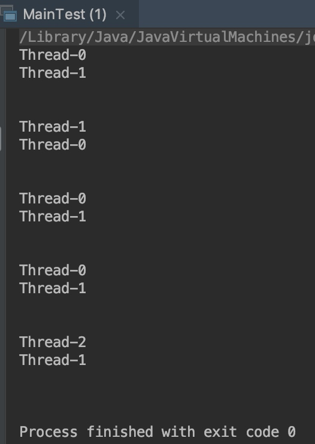

案例：基于AQS的自定义同步组件
AbstractQueuedSynchronizer
TwinsLock (自定义组件类)
package test.AbstractQueuedSynchronizerDemo;
import java.util.concurrent.TimeUnit;
import java.util.concurrent.locks.AbstractQueuedSynchronizer;
import java.util.concurrent.locks.Condition;
import java.util.concurrent.locks.Lock;
/**
* @author xuzhihua
* @date 2019/2/24 10:19 AM
* 设计一个同步工具(TwinsLock)：该工具在同一时刻，只运行至多两个线程同时访问，超过两个线程的访问将被阻塞
*
*/
public class TwinsLock implements Lock {
// 初始状态 status 为2， 当1个线程进行获取，status减1；该线程释放，则status加1
// status的合理范围是 0、1、2
private final Sync sync = new Sync(2);
private static final class Sync extends AbstractQueuedSynchronizer {
Sync(int count) {
if (count <= 0) {
throw new IllegalArgumentException("count must larger than zero.");
}
setState(count);
}
public int tryAcquireShared(int reduceCount) {
for (;;) {
int current = getState();
int newCount = current - reduceCount;
if (newCount < 0 || compareAndSetState(current, newCount)) {
return newCount;
}
}
}
public boolean tryReleaseShared(int returnCount) {
for (;;) {
int current = getState();
int newCount = current + returnCount;
if (compareAndSetState(current, newCount))
return true;
}
}
}
@Override
public void lock() {
sync.acquireShared(1);
}
@Override
public void unlock() {
sync.releaseShared(1);
}
@Override
public void lockInterruptibly() throws InterruptedException {
}
@Override
public boolean tryLock() {
return false;
}
@Override
public boolean tryLock(long time, TimeUnit unit) throws InterruptedException {
return false;
}
@Override
public Condition newCondition() {
return null;
}
}
MainTest (测试类)
package test.AbstractQueuedSynchronizerDemo;
import java.util.concurrent.TimeUnit;
import java.util.concurrent.locks.Lock;
/**
* @author xuzhihua
* @date 2019/2/24 10:30 AM
* 测试类
* 测试结果，线程名称成对输出，也就是在同一个时刻只有两个线程能够获取到锁
*/
public class MainTest {
public static void main(String[] args) {
test();
}
public static void test() {
final Lock lock = new TwinsLock();
class Worker extends Thread {
public void run() {
while (true) {
lock.lock();
try {
TimeUnit.SECONDS.sleep(1);
System.out.println(Thread.currentThread().getName());
TimeUnit.SECONDS.sleep(1);
} catch (InterruptedException e) {
e.printStackTrace();
} finally {
lock.unlock();
}
}
}
}
// 启动10个线程
for (int i = 0; i < 10; i++) {
Worker w = new Worker();
w.setDaemon(true);
w.start();
}
// 每隔1秒换行
for (int i = 0; i < 10; i++) {
try {
TimeUnit.SECONDS.sleep(1);
System.out.println();
} catch (InterruptedException e) {
e.printStackTrace();
}
}
}
}
输出结果
